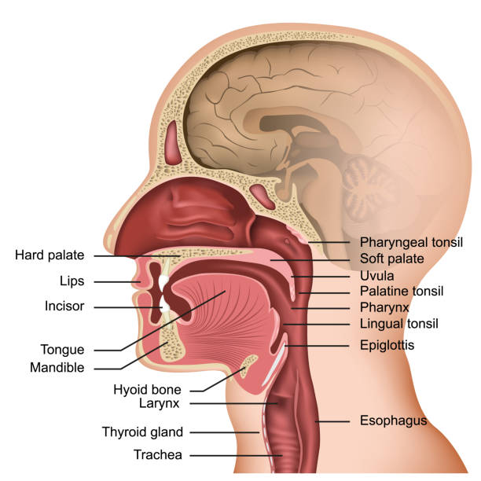

1.1 Oral Cavity#
The oral cavity serves as the primary site for food oral processing, where mechanical breakdown and sensory evaluation of food occur simultaneously. Understanding oral anatomy is fundamental to modeling mastication mechanics and texture perception.
Anatomical Overview#
{kind=link}

Fig. 4 Schematic of the human oral cavity highlighting key structures involved in food oral processing: teeth, hard palate, soft palate, tongue, and buccal surfaces.#
Key Structures in Food Processing#
Dentition#
The teeth provide the primary mechanical forces for food comminution. Incisors perform initial cutting (shearing), while molars execute grinding through cyclic occlusal motion. Bite force ranges from 50–800 N depending on food properties and individual variation.
Hard and Soft Palate#
The hard palate provides a rigid counter-surface against which the tongue compresses food boluses. Surface rugae enhance frictional contact and contribute to texture perception. The soft palate regulates bolus transport during the pharyngeal phase.
Buccal Surfaces#
Cheek musculature repositions food between dental arches during chewing cycles and contains mechanoreceptors contributing to bolus characterization.
Functional Considerations#
The oral cavity operates as an integrated system where:
Mechanical processing reduces particle size and increases surface area
Saliva incorporation modifies bolus rheology and tribological properties
Sensory transduction evaluates texture, taste, and temperature
Relevance to Food Design#
Oral cavity geometry and biomechanics inform the design of foods for specific populations (e.g., dysphagia patients) and the development of biomimetic tribological systems that replicate oral contact conditions.
References#
Note
Chapter references to be added.